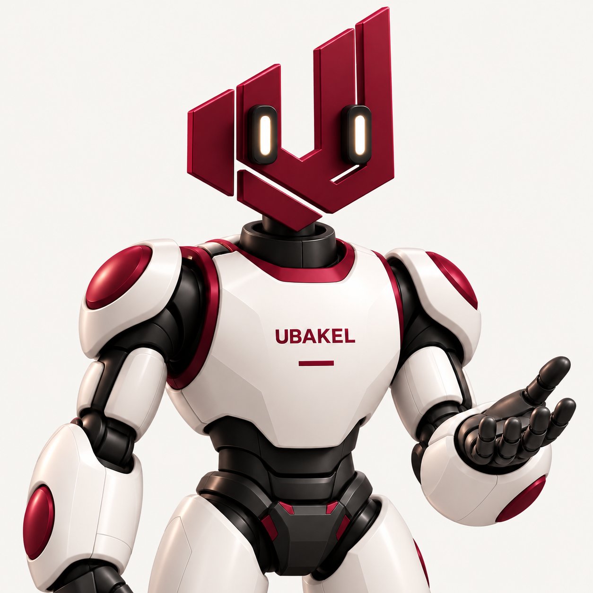
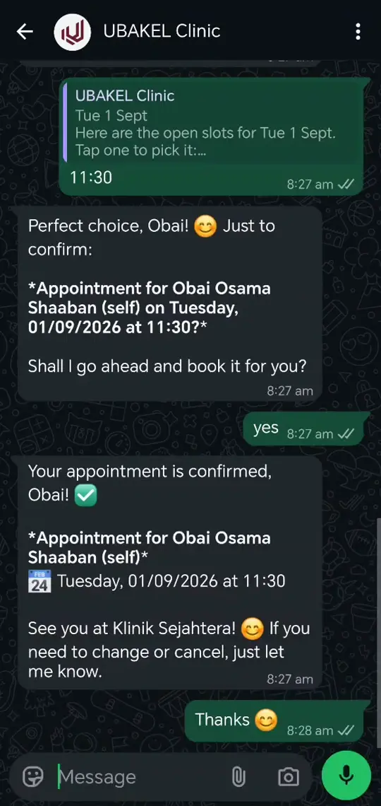

AI agents & assistants
Understand messages and documents, find answers and take approved actions in your tools.
For work that needs context.We build custom AI agents, automate repetitive work and connect your existing tools—so your team can spend less time moving information and more time using it.
Start with a free initial workflow audit.

An invoice lands in your inbox.
Details extracted. Exceptions flagged.
Examples, not a fixed menu. We build for your workflow.
Sometimes it needs AI. Sometimes a simple automation is enough. We choose the right combination for the work.
Understand messages and documents, find answers and take approved actions in your tools.
For work that needs context.Turn recurring tasks, checks, reminders and reporting into a flow that runs by your rules.
For work that follows a pattern.Connect your systems, keep records in sync and build the missing pieces around your workflow.
For work spread across tools.Choose a team to explore one possible workflow. Every build starts with your actual process.
Turn an approved request into an assigned task, an updated record and a notification to the right person.
Your team approves exceptions and changes to the plan.
Less chasing. Clear ownership of the next step.
These are starting points. We also build custom automations, agents and internal tools for the work unique to your business.
A recurring report, from incoming data to review.
Compare the two ways of working.
Collect files from different tools.
Your teamCheck entries. Copy into a template.
Your teamSend the report. Chase the reviewer.
Your teamRepeated copying, checking and chasing between tools.
A client workflow and a working demo. Different problems, the same focus on getting work done.
Reads bills and production data, checks for missing or duplicate information, and updates the existing reporting template.
Partial submissions remain usable. Production-only uploads update existing records without replacing earlier bill data.

The Intelicare demo connects enquiries, availability and booking records, with a route for your team to take over.
A working demonstration, not a live patient case study. The video uses demonstration data.
We start with the way work actually happens. Then we build the right mix of AI, automation and integration around it.
Walk through one workflow. Find the repetition, friction and handoffs that matter.
Simplify the process, connect your tools and build the parts that are worth automating.
Test real scenarios, help your team adopt the system and maintain it when needed.
You don’t need a technical brief. Tell us what repeats,
what gets stuck, or what you wish worked together.